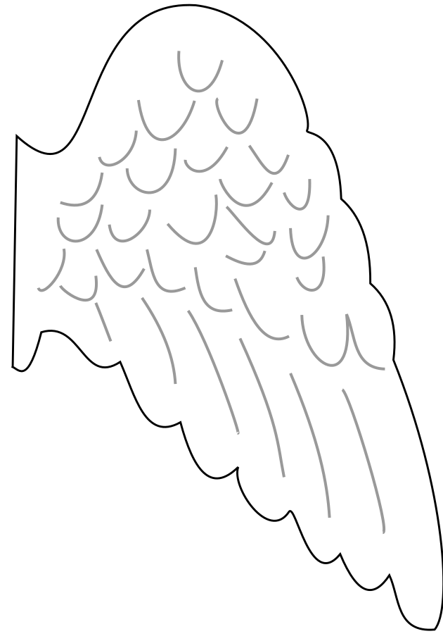
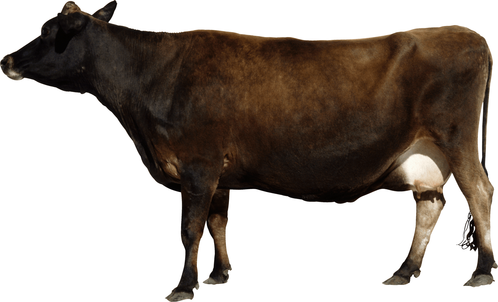
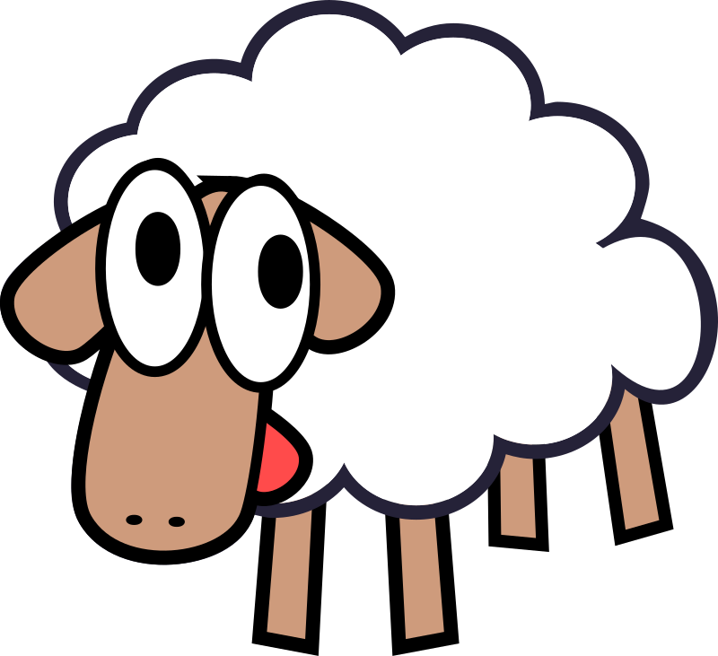

閃避飛天羊 · 頭部方向練習
請自然平視螢幕中央，放鬆坐正
注視中央十字。綠點中心越過綠框邊界即達該方向門檻；回正時請移近十字。
四個方向可分別設定。角度越小，越容易觸發；回正後牛會回到中央。
按方向切換。全部關閉時不出現羊，可單獨練習頭部動作。
Tobii 場次記錄每筆頭部姿態與視線，並計算視線和中央十字的距離與視角。請先在 Tobii Experience 完成眼睛校準，遊戲放在裝有 ET5 的螢幕上。
每局紀錄頭部姿態、羊隻位置、碰撞與有效性；Tobii 另含視線與雙眼位置。網頁在場次結束時下載 CSV，請在關閉前結束場次並允許下載。桌面版自動儲存 CSV 與場次摘要 JSON。
控制飛天牛在星空長廊翱翔，避開迎面而來的飛天羊！在設定中可選「計時練習」（固定速度，時間到結束，撞到羊只計次）或「無限加速」（越飛越快，撞到羊即結束），並調整羊飛來的速度。飛行時請一直注視畫面中央的白色十字。
| 動作 | 鍵盤輸入 | 頭部追蹤效果 |
|---|---|---|
| 向上飛 | ↑ 或 W | 抬頭 (Pitch 向上) |
| 向下飛 | ↓ 或 S | 低頭 (Pitch 向下) |
| 向左飛 | ← 或 A | 向自己左方轉頭 (Yaw 向左) |
| 向右飛 | → 或 D | 向自己右方轉頭 (Yaw 向右) |
| 回到平面中央 | 放開按鍵 | 頭部回到校正時的中立位置 |
| 重新置中 | 按鍵 R | 重新採集目前坐姿為中立點 |
| 暫停遊戲 | 按鍵 Esc | 清空輸入並凍結畫面 |
| 靜音開關 | 按鍵 M | 切換風聲與音效 |